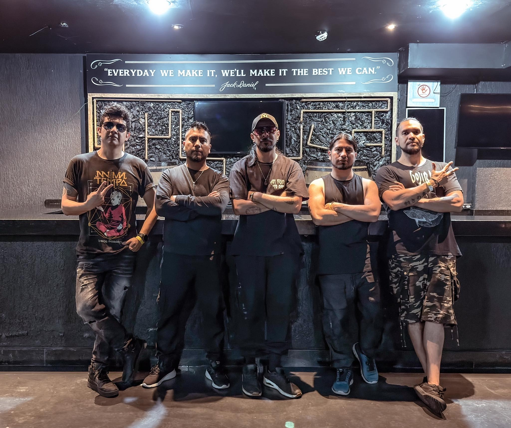

[L]a espera ha terminado para los seguidores del metal técnico y progresivo. Jinjer, la agrupación ucraniana que ha revolucionado el género en la última década, regresará a la Ciudad de México el próximo 19 de abril de 2026 como parte de su "Latin America Duël Tour". El escenario elegido es el legendario Circo Volador, donde la precisión técnica de la banda y la imponente voz de Tatiana Shmaylyuk prometen una noche histórica.
La gran noticia para la escena nacional es la confirmación de Anima Tempo como banda invitada de honor. Los capitalinos, referentes absolutos del Progressive Death Metal en México, no son ajenos a los escenarios internacionales tras sus exitosas giras por Europa y Japón. Su participación garantiza un "duelo" de virtuosismo sonoro desde el primer minuto.

Este tour llega bajo la promoción de su álbum "Duël", cuya estética de balas chocando simboliza la dualidad y el conflicto. Los asistentes pueden esperar un setlist que equilibre la brutalidad de sus temas más recientes con clásicos infaltables como "Pisces" y "I Speak Astronomy".